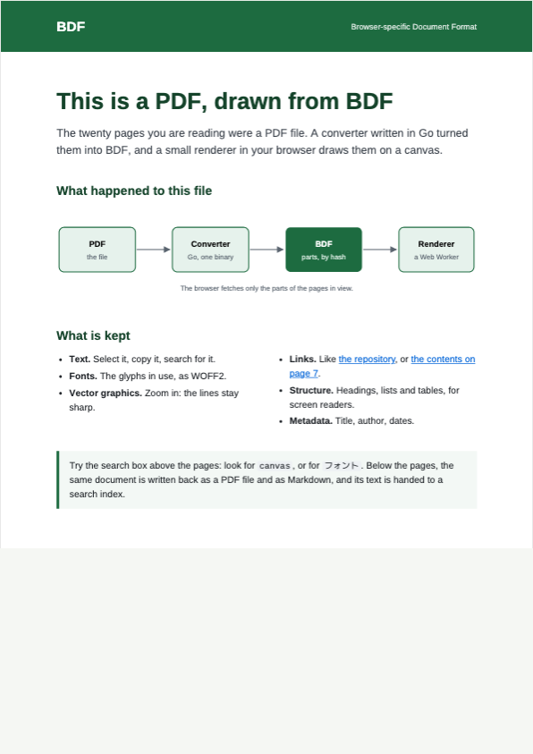

BROWSER DOCUMENT FORMAT
ドキュメントを、ブラウザで。
BDF の表示、検索、CSV・Excel・画像・フォントの変換を試せます。ファイルをドロップするか、サンプルを開いてください。
デモ文書
BDF を保存 ↓EXPLORE DOCUMENTS
文書のかたちに合わせたプレビュー
サンプルをビューアで開いて、表示や検索を試せます。
ブラウザで試す
ファイルを開くかビューアにドロップすると、このブラウザ内で処理します。
サンプルとライセンス
文書サンプルの元データ: MIT ライセンス。埋め込みフォント: Liberation、IPA、WenQuanYi。フォント見本: STIX Two Text（SIL Open Font License）。Excel サンプル: MIT ライセンス。